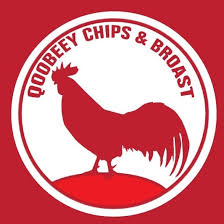

Welcome to Qoobeey
Welcome to Qoobeey Restaurant, one of the finest dining experiences in Mogadishu. We offer traditional Somali dishes prepared with fresh ingredients and authentic recipes passed through generations.

Why Choose Us?
- Fresh and organic ingredients
- Experienced chefs
- Comfortable environment
- Affordable prices
"Food is not just eating energy. It's an experience." – Qoobeey Chef